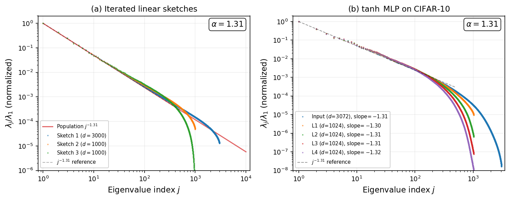
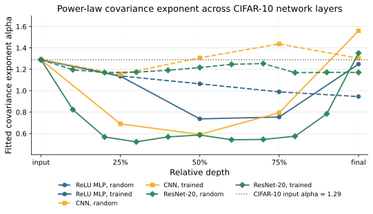
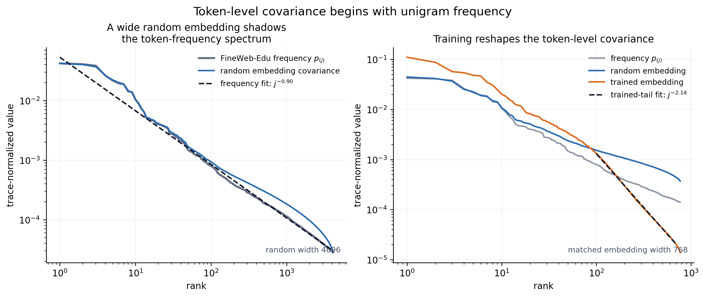
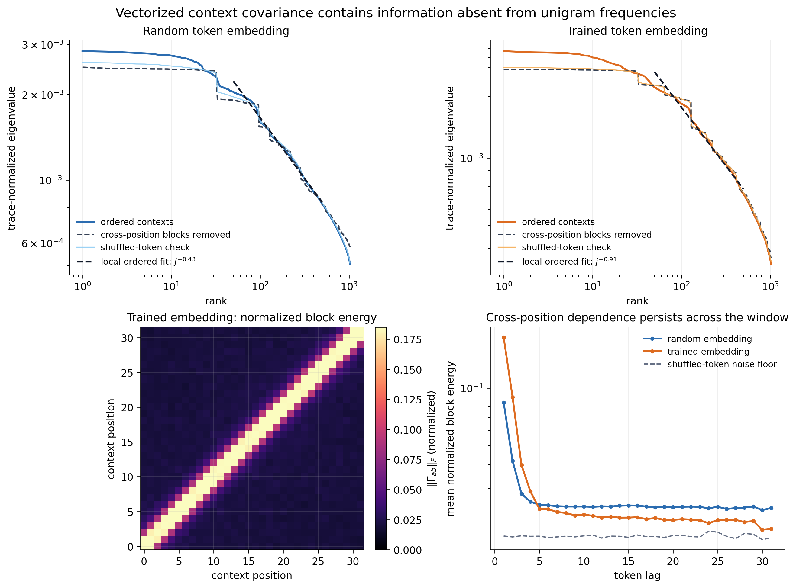
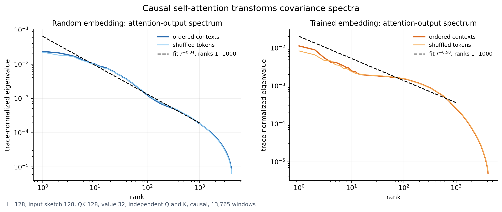
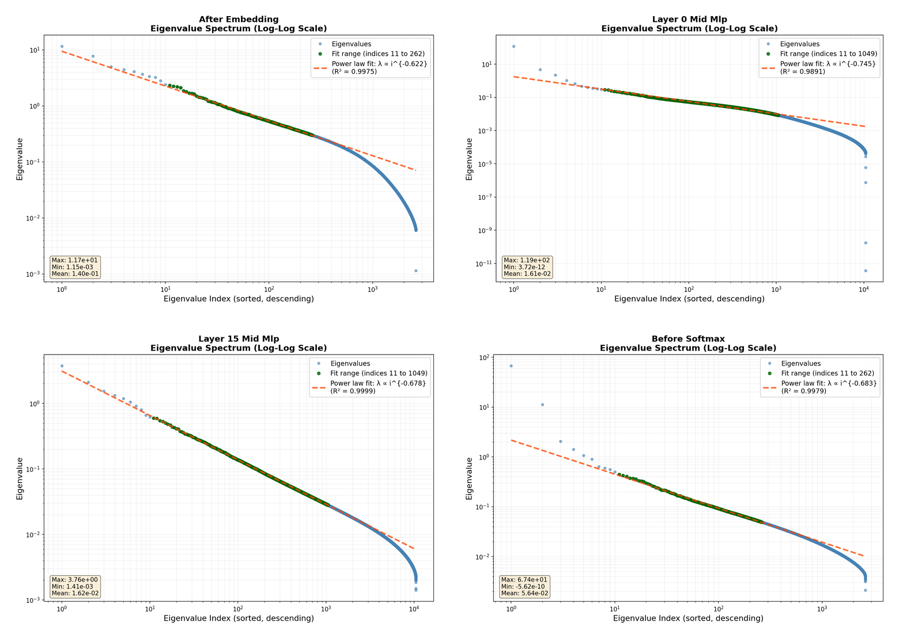
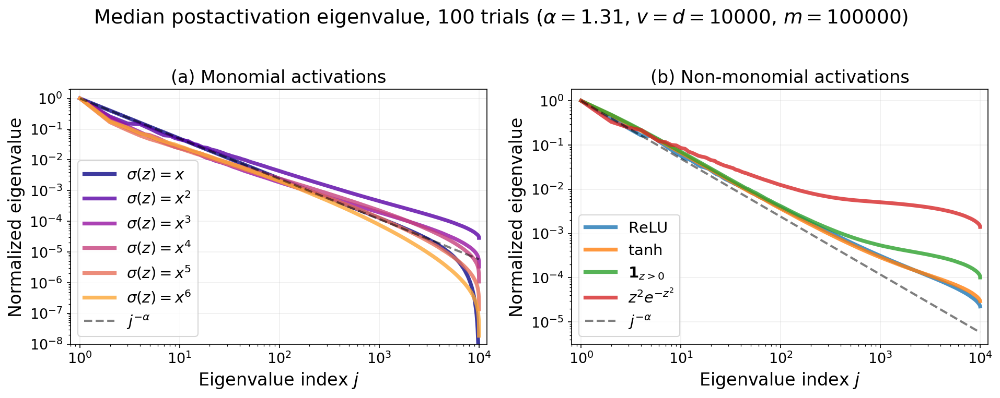
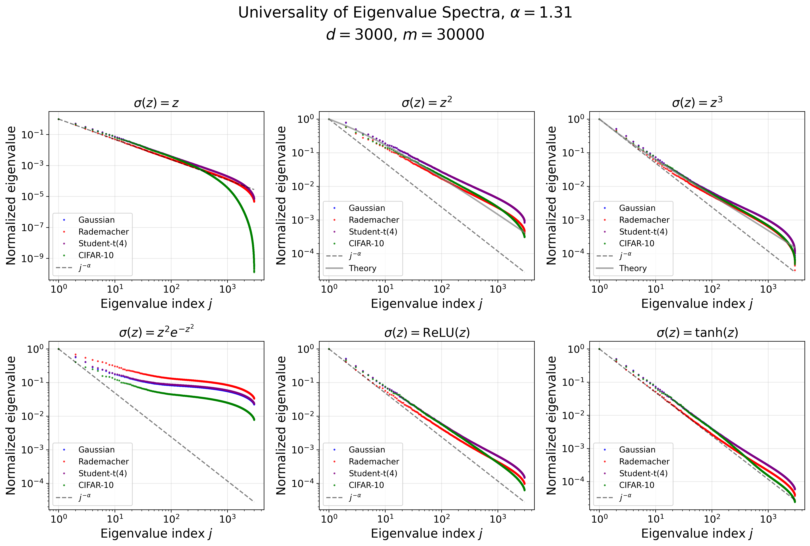

Power-Law Covariance
Module 1
1 The Simplifying Structure
Neural networks are expressive enough to fit essentially arbitrary input–output relationships. Universal approximation formalizes one version of this statement: with enough width, depth, and parameters, a neural network can represent a very large class of functions (Cybenko 1989; Hornik 1991). On a finite dataset, a sufficiently flexible network can also interpolate arbitrary labels.
Without further constraints, then, almost any behavior is possible. There is no single “general neural network problem” with a predictable output or training story: the space of possible data distributions, targets, and learned functions is simply too rich. We should expect the corresponding range of training behaviors to be equally rich.
A useful theory therefore has to impose structure on the class of problems under study. The goal is not to describe every neural network problem at once, but to identify assumptions that constrain the problem enough to improve our understanding of how it trains. Those assumptions might concern the data, the target, the architecture, or the optimizer.
The simplifying structure in these notes is the power-law covariance spectrum.
The claim of this first module is:
A surprisingly large part of the optimization and scaling-law story can be organized by looking at how covariance eigenvalues decay.
This is not the whole story. Architecture matters. The target function matters. The optimizer matters. Feature learning matters. But the covariance spectrum is a good first object because it is easy to measure, it appears in real data, and it survives some of the basic operations that neural networks apply to data.
2 Covariance
Let \(X \in \mathbb{R}^d\) be a random vector with mean \(\mu = \mathbb{E}X\). Its covariance matrix is defined by
\[ \Sigma = \operatorname{Cov}(X) = \mathbb{E}\left[(X-\mu)(X-\mu)^\top\right]. \]
For a centered random vector, this is simply
\[ \Sigma = \mathbb{E}[XX^\top] = \mathbb{E}[X \otimes X], \]
where \(X \otimes X\) is the tensor product of \(X\) with itself: a two-tensor in \(\mathbb{R}^d \otimes \mathbb{R}^d\).
If \(x,y \in \mathbb{R}^d\), then \(x \otimes y\) has coordinates
\[ (x \otimes y)_{ij} = x_i y_j. \]
In NumPy, this tensor product is a tensordot with no contracted axes:
import numpy as np
x_tensor_x = np.tensordot(x, x, axes=0)For a one-dimensional array x, the result has shape (d, d) and is equivalent to np.outer(x, x).
The inner product tensorizes: for \(x,y,u,v \in \mathbb{R}^d\),
\[ \langle x \otimes y, u \otimes v\rangle = \langle x,u\rangle \langle y,v\rangle. \]
Thus \(\mathbb{R}^d \otimes \mathbb{R}^d\) is naturally isomorphic to the space \(\mathbb{R}^{d \times d}\) of two-index arrays, and \(X \otimes X\) corresponds to the matrix \(XX^\top\). If we also use the Euclidean inner product to identify vectors and covectors, the same tensor can be viewed as the rank-one operator \(u \mapsto \langle X,u\rangle X\).
The covariance matrix records how the variability of \(X\) is distributed across directions. If \(u \in \mathbb{R}^d\) is a unit vector, then
\[ u^\top \Sigma u = \operatorname{Var}(\langle u, X\rangle) \]
is the variance of the data along direction \(u\). The eigenvectors of \(\Sigma\) give the principal directions of variation, and the eigenvalues
\[ \lambda_1(\Sigma) \geq \lambda_2(\Sigma) \geq \cdots \geq 0 \]
say how much variance lives in each direction.
This is a linear statistic. It does not know everything about the distribution of \(X\). But in high dimensions, even this linear statistic can already be rich. The preservation question later in the module asks whether this linear spectral summary remains recognizable after the nonlinear transformations used by a neural network. The relevant notion will be weak: constants, eigenvectors, and slowly varying corrections may change while the polynomial decay rate survives.
3 Power-Law Covariance
We say that \(X\), or its covariance matrix \(\Sigma\), has a power-law covariance spectrum with exponent \(\alpha > 0\) if
\[ \lambda_j(\Sigma) \asymp j^{-\alpha}. \]
Here \(a_j \asymp b_j\) means that the two quantities agree up to multiplicative constants independent of \(j\). On a log-log plot, a power law appears as an approximately straight line:
\[ \log \lambda_j \approx C - \alpha \log j. \]
This exponent is a soft notion of dimension. If the data lived exactly in a \(k\)-dimensional linear subspace, then only \(k\) eigenvalues would be nonzero. A power law is a softened version of that picture: there is no sharp cutoff, but the amount of variance still falls predictably as we move down the list of directions.
One useful way to see this is through the counting function
\[ N(\varepsilon) = \#\{j : \lambda_j(\Sigma) \geq \varepsilon\}. \]
If \(\lambda_j(\Sigma) \asymp j^{-\alpha}\), then
\[ N(\varepsilon) \asymp \varepsilon^{-1/\alpha}. \]
So the exponent tells us how many directions survive above a resolution \(\varepsilon\). Larger \(\alpha\) means the spectrum decays faster and the data is effectively lower-dimensional. Smaller \(\alpha\) means the tail is heavier and more directions remain relevant.
There is a precise setting in which a power-law spectrum records the dimension of a manifold. Let \(M\) be a compact \(k\)-dimensional Riemannian manifold, and let \(L=-\Delta_M\) be its nonnegative Laplace–Beltrami operator. If
\[ L\phi_j = \nu_j\phi_j, \qquad 0=\nu_0\leq \nu_1\leq \nu_2\leq\cdots, \]
then Weyl’s law says
\[ \#\{j:\nu_j\leq \Lambda\}\asymp \Lambda^{k/2}, \qquad\text{or equivalently}\qquad \nu_j\asymp j^{2/k}. \]
Thus the intrinsic dimension \(k\) determines how quickly new spatial modes appear (Grebenkov and Nguyen 2013).
The covariance spectrum is not automatically the Laplacian spectrum: Laplacian eigenvalues grow, whereas covariance eigenvalues decay. The connection appears when the data are modeled as a smooth random field on \(M\). For example, suppose the covariance operator is
\[ \Sigma=(I+L)^{-s}. \]
The Laplacian eigenfunctions \(\phi_j\) are then also covariance eigenfunctions, and
\[ \lambda_j(\Sigma) =(1+\nu_j)^{-s} \asymp j^{-2s/k}. \]
This separates two effects. The dimension \(k\) controls the density of available modes, while the regularity \(s\) controls how much variance remains in high-frequency modes. Matérn Gaussian fields on manifolds are an important example of this construction (Borovitskiy et al. 2020).
For visual data, this gives a geometric reason to expect a stable effective dimension. Images can be viewed as random fields on a two-dimensional spatial domain, or more generally as observations varying along a lower-dimensional manifold of pose, viewpoint, lighting, and deformation. If that underlying geometry and its regularity are stable, their spectral signature can persist across discretizations and datasets. This is a mechanism, rather than a claim that every visual dataset must have exactly the same exponent.
4 Examples
Power laws are common in machine learning, but they appear in several different places. Neural language model loss obeys empirical scaling laws in data, parameters, and compute (Kaplan et al. 2020; Hoffmann et al. 2022). Word frequencies follow Zipf-like laws (Piantadosi 2014). Here we focus on a more geometric example: covariance spectra of data and representations.
4.1 Images
CIFAR-10 is a small image dataset (Krizhevsky 2009), but its covariance spectrum already has a clear power-law shape. Even more suggestive, when CIFAR images are pushed through random neural layers, the activation covariance spectra often continue to look power-law.

Figure Figure 1 shows two related facts. A random linear sketch does not destroy the tail exponent. A random nonlinear tanh MLP, at least in this experiment, also keeps the same slope across layers. The theorem later in this module explains a clean version of this phenomenon for random features and monomial activations.
The same experiment can be repeated across architectures. The exponents are not identical layer by layer, but the broad fact is stable: activation covariance spectra remain close to power laws.

4.2 Language
Language gives another route into the same idea, but first we have to decide what the random vector is. A token, a whole context window, and a hidden state produce different covariance operators. They answer different questions.
4.2.1 One token: frequency geometry
Let \(T\) be a token with probabilities \(p_i=\mathbb P(T=i)\), and let \(u_T\in\mathbb R^V\) be its one-hot vector. Then
\[ \operatorname{Cov}(u_T) =\operatorname{diag}(p)-pp^\top. \]
Thus unigram frequencies already define a covariance spectrum. If \(p_{(1)}\geq p_{(2)}\geq\cdots\) are the sorted frequencies, rank-one interlacing gives
\[ p_{(j)} \geq \lambda_j\bigl(\operatorname{Cov}(u_T)\bigr) \geq p_{(j+1)}. \]
Consequently, a Zipf-like frequency tail gives essentially the same tail in one-hot covariance. Centering changes the operator by one rank; it does not remove the long spectral tail.
Now let \(E\in\mathbb R^{V\times d}\) be a token-embedding matrix, with row \(e_i\), and set \(X=e_T=E^\top u_T\). Its covariance is
\[ \Sigma_{\mathrm{token}} =\operatorname{Cov}(e_T) =E^\top\bigl(\operatorname{diag}(p)-pp^\top\bigr)E. \]
At random initialization, \(E^\top\) is a random sketch of the categorical covariance. If the width is large enough to resolve the leading token directions, the leading covariance eigenvalues shadow the leading frequencies. A finite-width embedding cannot preserve all \(V\) directions: the unresolved tail is compressed into a finite-width spectral floor.

Figure Figure 3 uses the GPT-2 tokenizer on a held-out FineWeb-Edu shard (Penedo et al. 2024). The random calculation makes precise the sense in which token-level covariance at initialization mostly sees frequency. The trained curve also gives an important qualification: learning can reshape the embedding geometry substantially even though the sampling probabilities are unchanged. In particular, the visible change of slope gives a two-regime rather than a single-power-law picture. The trained embeddings have learned semantic overlap and redundancy between tokens; that shared structure concentrates variation into fewer directions and is reflected in the sharper terminal cutoff. Such crossovers are common in empirical spectra. They can be modeled by piecewise power laws—one exponent before a characteristic scale and another after it—without changing the basic spectral methods used below.
4.2.2 A whole context: sequence geometry
A language-model training example is not a single token. It is an ordered window \((T_1,\ldots,T_L)\). To retain its second-order structure, vectorize the centered embeddings:
\[ C_L =\operatorname{vec}\bigl( e_{T_1}-\mu_1,\ldots,e_{T_L}-\mu_L \bigr) \in\mathbb R^{Ld}, \qquad \mu_a=\mathbb E[e_{T_a}]. \]
The context covariance is the block matrix
\[ \Sigma_{\mathrm{context}} =\operatorname{Cov}(C_L) = \begin{bmatrix} \Gamma_{11} & \cdots & \Gamma_{1L}\\ \vdots & \ddots & \vdots\\ \Gamma_{L1} & \cdots & \Gamma_{LL} \end{bmatrix}, \qquad \Gamma_{ab} =\mathbb E\!\left[ (e_{T_a}-\mu_a)\otimes(e_{T_b}-\mu_b) \right]. \]
The diagonal blocks are the positionwise token covariances. The off-diagonal blocks are new: they measure dependence between different positions. For a stationary sequence, \(\Gamma_{ab}\) depends approximately only on the lag \(b-a\), so the operator is approximately block Toeplitz. If tokens are sampled independently from their unigram distribution, every off-diagonal block vanishes.
How the context covariance was computed. We sampled 50,000 nonoverlapping length-32 windows without crossing document boundaries. Both width-768 embedding tables were mapped through the same fixed random orthogonal projection to 32 features per token. Each projected window was flattened to a 1,024-dimensional vector, centered coordinatewise across windows, and used to form
\[ \widehat\Sigma_{\mathrm{context}} =\frac{1}{n-1} \sum_{w=1}^n(c_w-\bar c)\otimes(c_w-\bar c). \]
The plotted eigenvalues are divided by their sum. The block-diagonal control sets \(\Gamma_{ab}=0\) for \(a\ne b\); the shuffled control permutes the sampled tokens before rebuilding the windows.

In Figure Figure 4, the dashed spectral control keeps each diagonal block \(\Gamma_{aa}\) and sets all cross-position blocks to zero. The shuffled-token control estimates the finite-sample noise floor. Ordered contexts change the leading context eigenvalues, and the band around the diagonal of the block matrix makes the source visible: nearby token positions are correlated. The vectorized covariance also has two visibly different spectral phases: a relatively flat, saturated head followed by a differently shaped decaying tail. The fits over ranks 50–500 summarize that second regime; they are local guides after the initial saturation, not claims of a global context-spectrum exponent. At lag one, the normalized block energy is approximately \(0.090\) for the random embedding and \(0.184\) for the trained embedding, compared with shuffled baselines of approximately \(0.022\) and \(0.017\).
This leads to an open question for sequence models: how does attention transform context covariance, even at initialization? The projections \(W_Q,W_K,W_V\) act token by token with weights shared across positions, but the attention weights couple tokens through their dot products. The diagonal token-covariance blocks and the off-diagonal cross-token blocks are therefore transformed together. Even for random weights, this is no longer the positionwise random-feature map studied later in the chapter. Let
\[ q_t=W_Q x_t,\qquad k_t=W_K x_t, \qquad a_t=\operatorname{softmax}_{s\leq t} \left(\frac{\langle q_t,k_s\rangle}{\sqrt m}\right), \qquad y_t=\sum_{s\leq t}a_{ts}W_Vx_s . \]
Figure Figure 5 uses fixed random maps \(W_Q,W_K,W_V\), so it is still an input-geometry diagnostic rather than a trained transformer measurement. The words “random” and “trained” refer only to the token embedding table. We use independent random query and key maps, as in standard transformer attention. Each length-\(128\) window is sent through causal self-attention, and the resulting \((y_1,\ldots,y_{128})\) is flattened before taking its covariance.

Both output covariances have an extended region of approximately power-law decay, although neither is a single power law over its full rank range. This calculation is only a first diagnostic. A general account of how attention transforms power-law context covariance—and which aspects are controlled by token marginals versus cross-token correlations—remains open.
The ordered and shuffled curves in Figure Figure 5 are not exactly equal, but their closeness illustrates a general limitation: sorted eigenvalues can be nearly insensitive to changes that substantially rearrange eigenvectors and cross-position covariance blocks. More generally, \(Q\Sigma Q^\top\) has exactly the same eigenvalues as \(\Sigma\) for every orthogonal \(Q\); permutation matrices are a special case. The basis is therefore essential. Eigenvectors identify which combinations of coordinates carry the variance, and that information is absent from the sorted spectrum alone.
RoPE gives an exact version of this phenomenon. At position \(t\), it applies an orthogonal rotation \(R_t\) to the token representation. On a vectorized context, this is the block-diagonal orthogonal map
\[ R=\operatorname{diag}(R_1,\ldots,R_L). \]
If \(C_L\) is the original context vector, then
\[ \operatorname{Cov}(R C_L) =R\Sigma_{\mathrm{context}}R^\top . \]
The covariance therefore has exactly the same eigenvalues. Its eigenvectors are rotated in a position-dependent way, which is precisely where the positional information lives. This statement applies to the full vectorized context (and to a token covariance at any fixed position). Pooling differently rotated tokens across positions need not preserve the spectrum.
4.2.3 Activation covariance in a transformer
The same distinction returns after the context has passed through the network. Write \(h_{w,t}\in\mathbb R^m\) for the activation at position \(t\) in context window \(w\). There are at least two natural operators:
\[ \Sigma_h^{\mathrm{token}} =\operatorname{Cov}_{w,t}(h_{w,t}), \qquad \Sigma_h^{\mathrm{context}} =\operatorname{Cov}_{w}\!\left( \operatorname{vec}(h_{w,1},\ldots,h_{w,L}) \right). \]
The first pools token positions and studies anisotropy across the \(m\) feature channels. It is an \(m\times m\) matrix and is the standard, tractable choice when studying the linear maps shared across positions. The second is an \(Lm\times Lm\) block matrix. It retains cross-position dependence and is the more faithful object for questions about the whole sequence, but it is much larger.
The activation spectra below are pooled-token measurements of the first kind. The four panels show covariance-eigenvalue spectra at different locations in a trained decoder-only transformer: after the token embedding, midway through the MLPs in layers 0 and 15, and immediately before the final softmax. The model was trained on FineWeb. Its residual stream has width \(41\cdot64=2624\), and its MLP hidden layer has width \(41\cdot256=10496\). In each panel, the green points mark the fitted ranks: 11 through 262 for residual-stream activations and 11 through 1049 for MLP activations. The dashed line is the corresponding power-law fit.

The displayed covariance-eigenvalue exponents range from approximately \(0.62\) to \(0.75\). The exact value changes with the layer and with the chosen fitting window. The main evidence is therefore not one universal exponent, but an extended regime of approximately power-law spectral decay at every location shown. These empirical activation covariances are not the same object as the idealized covariance in the theorem below. They nevertheless show why an isotropic model, in which every activation direction has the same scale, misses a visible feature of transformer representations.
4.3 Source and Capacity
The language around power-law spectra overlaps with the older source/capacity language from kernel regression (Caponnetto and De Vito 2007; Rudi and Rosasco 2017).
- A capacity condition is about the size of the hypothesis space or feature space. Spectrally, it is often an eigenvalue decay assumption for a covariance or kernel operator.
- A source condition is about the target function: how strongly the target aligns with easy versus hard directions.
In supervised regression, we observe input–output pairs \((x_i,y_i)\) and try to estimate the regression function
\[ f_\star(x)=\mathbb E[Y\mid X=x]. \]
Kernel ridge regression chooses a positive-definite kernel \(k\) with reproducing kernel Hilbert space \(\mathcal H_k\), and solves
\[ \widehat f_\tau =\underset{f\in\mathcal H_k}{\operatorname{argmin}} \left\{ \frac1n\sum_{i=1}^n\bigl(f(x_i)-y_i\bigr)^2 +\tau\|f\|_{\mathcal H_k}^2 \right\}. \]
Write \(k_x=k(x,\mathord\cdot)\in\mathcal H_k\) for the feature vector associated with an input \(x\). The input distribution defines the population covariance operator
\[ \Sigma =\mathbb E_X[k_X\otimes k_X]. \]
The capacity condition describes how many feature directions can be learned at regularization scale \(\tau\). The source condition describes how well the target \(f_\star\), or its projection into \(\mathcal H_k\), aligns with those directions. This is the kernel-regression version of separating data geometry from target difficulty.
More abstractly, let \(\Sigma\) be a positive compact operator on a separable Hilbert space \(\mathcal H\), with eigenpairs
\[ \Sigma e_j=\lambda_j e_j, \qquad \lambda_1\geq\lambda_2\geq\cdots>0. \]
Capacity. A standard capacity condition controls the effective dimension
\[ \mathcal N(\tau) =\operatorname{Tr}\!\left(\Sigma(\Sigma+\tau I)^{-1}\right) =\sum_j\frac{\lambda_j}{\lambda_j+\tau} \]
by requiring
\[ \mathcal N(\tau)\leq Q\tau^{-\gamma}, \qquad 0<\gamma\leq1. \]
A stronger spectral normalization often used for the same purpose, with \(p=1/\gamma>1\), is
\[ \operatorname{Tr}(\Sigma^{1/p}) =\sum_j\lambda_j^{1/p}<\infty. \]
These are one-sided conditions: they limit how many directions can remain visible at scale \(\tau\), but they do not assert a matching lower bound or an exact spectral shape (Caponnetto and De Vito 2007; Rudi and Rosasco 2017).
Source. Write the target in the same eigenbasis,
\[ f_\star=\sum_j\theta_j e_j. \]
The target satisfies a source condition of order \(r\geq0\) if there is some \(g\in\mathcal H\) such that
\[ f_\star=\Sigma^r g. \]
Equivalently,
\[ \|\Sigma^{-r}f_\star\|_{\mathcal H}^2 =\sum_j\frac{\theta_j^2}{\lambda_j^{2r}}<\infty. \]
This is a spectral smoothness condition: the target must place sufficiently little mass in directions where the data covariance is small.
Where exact power laws sit. Suppose
\[ \lambda_j\asymp j^{-\alpha}, \qquad \theta_j\asymp j^{-\beta}. \]
When \(\alpha>1\), the effective dimension has the sharp asymptotic behavior
\[ \mathcal N(\tau)\asymp\tau^{-1/\alpha}. \]
Thus an exact power law does more than satisfy a capacity upper bound: it pins down the capacity exponent and supplies a matching lower bound. It also saturates the associated trace-moment condition, because
\[ \operatorname{Tr}(\Sigma^{1/p})<\infty \quad\Longleftrightarrow\quad p<\alpha. \]
At the endpoint \(p=\alpha\), the sum is harmonic and diverges. Similarly, the source condition holds precisely when
\[ 2\beta-2\alpha r>1, \qquad\text{or equivalently}\qquad r<\frac{\beta-\tfrac12}{\alpha}. \]
It fails at equality. Exact power-law data and targets therefore sit naturally on the boundaries of whole families of source and capacity conditions. The power-law assumption is stronger: instead of asserting only membership in one of these classes, it specifies the spectral model itself.
There is also a normalizability distinction. For an infinite-dimensional Hilbert-valued random vector,
\[ \mathbb E\|X\|_{\mathcal H}^2 =\operatorname{Tr}(\Sigma) \asymp\sum_j j^{-\alpha}, \]
which is finite only when \(\alpha>1\). This is the regime covered by the standard trace-class Hilbert-space theory. A finite-dimensional power-law model still makes sense for every \(\alpha>0\), including the non-summable regimes \(\alpha\leq1\); its trace then grows with the dimension cutoff. This ability to describe both normalizable and non-normalizable tails is one reason to formulate the model directly as a power law.
In the power-law random features model used later, these are represented by two exponents. We write
\[ X_j=j^{-\alpha/2}Z_j, \qquad \mathbb E[X_j^2]=j^{-\alpha}, \qquad b_j=j^{-\beta}. \]
Thus \(\alpha\) is the covariance-eigenvalue exponent and \(\beta\) describes the target coefficients. Module 2 will use both.
For now, the main point is that covariance is only one side of the problem. It tells us where the data varies. It does not, by itself, tell us what function we are trying to learn.
5 Nonlinear Representations
Covariance is a property of linear projections of the data. Neural networks are not linear. So there is an immediate concern:
If the data starts with power-law covariance, does anything about that structure survive after nonlinear layers?
5.1 Activations and layerwise composition
A neural network does not map the input to the output in one operation. It passes a succession of intermediate vectors from one layer to the next. These vectors are the activations. For a basic MLP, write
\[ H^{(0)}=X, \qquad Z^{(\ell)}=(W^{(\ell)})^\top H^{(\ell-1)}, \qquad H^{(\ell)}=f_\ell\!\left(Z^{(\ell)}\right). \]
The output \(H^{(\ell)}\) of layer \(\ell\) is the input to layer \(\ell+1\). Its activation covariance is
\[ \Sigma_\ell =\operatorname{Cov}\!\left(H^{(\ell)}\right). \]
For one block \(h(x)=f(W^\top x)\), this reduces to
\[ \Sigma_{f,W} = \operatorname{Cov}(f(W^\top X)). \]
This object asks: after the incoming activations are linearly mixed and passed through a nonlinearity, what are the principal directions of variation passed to the next layer?
This formulation also explains why a one-block preservation result can be useful for a deep MLP. Suppose each block has the implication
\[ \lambda_j(\Sigma_{\ell-1})\asymp j^{-\alpha} \quad\Longrightarrow\quad \lambda_j(\Sigma_\ell)\asymp j^{-\alpha}, \]
possibly up to logarithmic corrections and a finite-width cutoff. If its hypotheses remain valid at every layer, the same implication can be applied inductively, so a composition of such blocks preserves the exponent.
There is an important qualification. For nonlinear \(f_\ell\), the covariance \(\Sigma_\ell\) is generally not determined by \(\Sigma_{\ell-1}\) alone; it can depend on higher-order features of the incoming distribution. Thus the induction is a statement about a class of activation distributions, not a closed recursion on covariance matrices. Gaussian inputs, fresh random weights, and coordinatewise activations give one tractable setting. Trained weights, residual connections, normalization, and finite-width dependence require additional arguments.
5.2 Random features isolate one block
Random features are the cleanest mathematical version of this question (Rahimi and Recht 2007). Rahimi and Recht introduced randomized nonlinear feature maps as explicit, finite-dimensional approximations to kernel feature spaces: the random map is frozen and a linear readout is trained. From the present viewpoint, freezing \(W\) isolates the representation problem from the optimization problem. We can ask exactly what one random nonlinear block does to the spectrum of its input.
Maloney, Roberts, and Sully use this random-feature viewpoint in a solvable model of neural scaling laws (Maloney et al. 2022). Their Figure 4 gives a useful numerical comparison on CIFAR-10: a ReLU random-feature map approximately preserves the power-law exponent and extends the power-law-shaped spectrum to more feature directions as its width grows. A linear random map does not produce the same extension. The fitted exponent after ReLU drifts slightly, so this is evidence for approximate preservation rather than exact equality—and for a phenomenon broader than any one exactly solvable activation.
The preservation theorem below answers the following deliberately sharp question:
If the input covariance has eigenvalues \(j^{-\alpha}\), what happens after a random-feature block \(f(W^\top X)\) when \(f\) is a monomial?
5.3 What changes for sequence transformations?
For sequence data, the activations at layer \(\ell\) form a matrix
\[ H^{(\ell)} = \begin{bmatrix} \vert & & \vert\\ h^{(\ell)}_1&\cdots&h^{(\ell)}_L\\ \vert & & \vert \end{bmatrix} \in\mathbb R^{d_\ell\times L}, \]
not a single vector. As in the earlier language example, this gives both a pooled-token activation covariance and a vectorized context covariance. A positionwise MLP with shared weights,
\[ h_t^+ =f(W^\top h_t), \qquad t=1,\ldots,L, \]
applies the same random-feature map separately at every position. The theorem below is therefore relevant to each token marginal, or equivalently to the diagonal blocks of the context covariance. The off-diagonal blocks transform jointly:
\[ \Gamma_{ab}^+ =\mathbb E\!\left[ \bigl(f(W^\top h_a)-\mu_a^+\bigr) \otimes \bigl(f(W^\top h_b)-\mu_b^+\bigr) \right], \qquad \mu_t^+=\mathbb E[f(W^\top h_t)]. \]
Preservation of the pooled-token spectrum does not, by itself, imply preservation of the full context spectrum, because it says nothing about these cross-position blocks.
Sequence-mixing layers pose a different question. For example, if a fixed matrix \(A\in\mathbb R^{L\times L}\) mixes positions and
\[ H^+=W^\top H A^\top, \]
then
\[ \operatorname{vec}(H^+) =(A\otimes W^\top)\operatorname{vec}(H) \]
and hence
\[ \Sigma_{\mathrm{context}}^+ =(A\otimes W^\top)\, \Sigma_{\mathrm{context}}\, (A^\top\otimes W). \]
Even this linear sequence map acts simultaneously on positional and feature geometry. Self-attention is harder because its mixing matrix \(A(H)=\operatorname{softmax}(Q(H)^\top K(H))\) is itself data-dependent. It couples all positions before the next activation is formed, so the random-features-plus-monomial theorem is not directly a theorem about an attention block. A sequence analogue would have to control the evolution of the whole block covariance—or a richer object that also retains the data-dependent attention weights—not only the pooled-token covariance.
Status: open.
Formulate a theorem describing how power-law spectra transform under self-attention-type transformations.
6 The Preservation Theorem
Theorem 1 is the core result of Paquette, Xiao, and Zhu (Paquette et al. 2026), and answers Question 2.
Theorem 1 (Power-Law Preservation for Random Features) Let \(X \sim N(0,\Sigma) \in \mathbb{R}^v\), and suppose
\[ \lambda_j(\Sigma) \asymp j^{-\alpha}. \]
Let \(W \in \mathbb{R}^{v \times d}\) have independent standard Gaussian entries, and let \(f(y)=y^p\) be a monomial activation. Define the population random-feature second-moment matrix
\[ K_{f,W} = \mathbb{E}_X\left[\frac{1}{d} f(W^\top X)f(W^\top X)^\top\right]. \]
Then, with high probability over \(W\), the eigenvalues of \(K_{f,W}\) satisfy
\[ \lambda_j(K_{f,W}) \asymp \left(\frac{\log^{p-1}(j+1)}{j}\right)^\alpha \]
for
\[ 1\leq j\leq c\,\frac{d}{\log^{p+1}d}, \]
with corresponding polylogarithmic upper and lower bounds through the rest of the spectrum.
Asymptotically, the important part is that the polynomial exponent is inherited. The activation changes constants and adds a logarithmic correction, but it does not replace the input spectrum by something with a different polynomial rate. At realistic widths, however, the logarithm is not necessarily negligible.
For the quadratic activation, the predicted curve is
\[ \lambda_j \asymp \left(\frac{\log(j+1)}{j}\right)^\alpha. \]
Its local slope on log-log axes is
\[ \alpha_{\mathrm{local}}(j) =-\frac{d\log\lambda_j}{d\log j} =\alpha\left( 1-\frac{j}{(j+1)\log(j+1)} \right). \]
Thus at rank \(j=3{,}000\), the local slope is only about \(0.875\alpha\). If \(\alpha=1.31\), the local slope is approximately \(1.15\). An unweighted ordinary least-squares fit of \(\log\lambda_j\) on \(\log j\) over integer ranks \(10\) through \(3{,}000\) gives an exponent of approximately \(1.09\), even though the true polynomial exponent is \(1.31\).
The approach to \(\alpha\) is extraordinarily slow. The local slope is within \(10\%\) of \(\alpha\) only around \(j=e^{10}\approx 22{,}000\), and within \(5\%\) only around \(j=e^{20}\approx 4.9\times 10^8\). At moderate width, the logarithmic correction is therefore more likely to appear as a shifted fitted exponent than as visible curvature.
This is why the covariance spectrum is a plausible simplifying framework. It is not only visible in the raw data; in an idealized model, it survives a basic neural-network operation.

The theorem is deliberately narrower than the experiments. It assumes Gaussian data and monomial activations. The numerical evidence is broader: ReLU, tanh, Heaviside, Gaussian/Rademacher/heavy-tailed synthetic data, and CIFAR-10 all show related preservation behavior in these experiments.

Status: open.
Prove a power-law spectral-preservation theorem for random-feature blocks with ReLU or tanh activation. The experiments above suggest preservation, but Theorem 1 applies only to monomial activations.
7 Proof Overview
The proof follows one chain of reductions. Here is the whole argument before we look more closely at its parts.
- Start with the linear sketch. If \(f(y)=y\), then
\[ K_{f,W} = \frac{1}{d} W^\top \Sigma W. \]
Thus even the warm-up is a covariance-estimation problem: a random sketch must preserve the tail of \(\Sigma\) up to the finite-width cutoff.
Lift the monomial into tensor space. For \(f(y)=y^p\), Gaussian moments and Wick’s formula rewrite the feature kernel as a sum of chaos components. The principal component is a covariance operator on degree-\(p\) tensor features; the other Wick contractions are lower-order terms.
Center and isolate the principal chaos. Removing the lower-order mean terms exposes the tensor covariance whose eigenvalues are products \(\lambda_{i_1}\cdots\lambda_{i_p}\). The proof then shows that the remaining chaos terms do not change the leading polynomial rate.
Count tensor-product eigenvalues. Many index tuples produce products at the same scale. Lattice counting converts the original power law into
\[ j^{-\alpha} \quad\leadsto\quad \left(\frac{\log^{p-1}(j+1)}{j}\right)^\alpha. \]
- Transfer the population spectrum to finite width. The random columns of \(W\) are samples in tensor space, so the finite-width feature kernel is an empirical covariance matrix. A head-tail decomposition and concentration argument show that it tracks the population tensor covariance over a large rank range despite the heavy-tailed tensor features.
We specialize to the quadratic activation case, which illustrates all of the main ideas. It also reveals a second interpretation of the kernel trick: the random-feature kernel is an empirical covariance matrix in a much larger tensor space.
7.1 Centering isolates the pure second chaos
Work in an eigenbasis of \(\Sigma\), and write
\[ X=\Sigma^{1/2}Z, \qquad \Sigma=\operatorname{diag}(\lambda_1,\lambda_2,\ldots), \qquad Z\sim N(0,I). \]
Let \(w_a\) be column \(a\) of \(W\), and define the preactivation and its variance
\[ g_a=w_a^\top X, \qquad q_a=\mathbb E_X[g_a^2]=w_a^\top\Sigma w_a. \]
The raw quadratic activation \(g_a^2\) is not centered. Its mean \(q_a\) is a degree-zero Gaussian chaos. Subtracting it leaves the pure second chaos
\[ :g_a^2: \;=\; g_a^2-\mathbb E_X[g_a^2] \;=\; g_a^2-q_a. \]
The colons denote the Wick square. “Pure” means that the constant component has been removed: \(:g_a^2:\) lies entirely in the second Wiener chaos, the \(L^2\) space spanned by centered quadratic Hermite polynomials (Janson 1997).
This centering also reconciles the second moment used in the theorem with the activation covariance used earlier. Let
\[ G=W^\top\Sigma W, \qquad q=\operatorname{diag}(G). \]
Isserlis’ formula gives
\[ \mathbb E_X[g_a^2g_b^2] =q_aq_b+2G_{ab}^2. \]
Consequently,
\[ K_{2,W}^{\mathrm{raw}} =\frac{1}{d}\mathbb E_X \left[g^{\odot 2}(g^{\odot 2})^\top\right] =\frac{1}{d}qq^\top+\frac{2}{d}G^{\odot 2}, \]
where \(\odot\) denotes entrywise multiplication, while the centered activation covariance is
\[ K_{2,W}^{\mathrm{chaos}} =\frac{1}{d}\operatorname{Cov}_X(g^{\odot 2}) =\frac{2}{d}G^{\odot 2}. \]
The two matrices differ by one positive rank-one term. That term can change a leading eigenvalue, but by interlacing it cannot create or remove an extended spectral tail.
7.2 Expanding the chaos in an orthogonal basis
The second Wiener chaos has the orthonormal basis
\[ \frac{Z_r^2-1}{\sqrt 2}, \qquad Z_rZ_s\quad(r<s). \]
Expanding the Wick square in this basis gives
\[ :g_a^2: = \sum_r \lambda_r w_{ra}^2(Z_r^2-1) +2\sum_{r<s} \sqrt{\lambda_r\lambda_s}\, w_{ra}w_{sa}Z_rZ_s. \]
Let \(\phi_a\) be its coefficient vector:
\[ \phi_a = \left( (\sqrt 2\,\lambda_r w_{ra}^2)_r,\; (2\sqrt{\lambda_r\lambda_s}\,w_{ra}w_{sa})_{r<s} \right). \]
Orthogonality of the chaos basis implies
\[ \mathbb E_X[:g_a^2::g_b^2:] =\langle\phi_a,\phi_b\rangle. \]
If \(\Phi\) is the matrix with columns \(\phi_1,\ldots,\phi_d\), then
\[ K_{2,W}^{\mathrm{chaos}} =\frac{1}{d}\Phi^\top\Phi. \]
This identity is the kernel trick for the quadratic activation. The kernel matrix is a \(d\times d\) Gram matrix of vectors living in the symmetric two-tensor space, which has dimension \(v(v+1)/2\) when the input dimension is \(v\).
7.3 Where the logarithm comes from
Now average over a random sketch column \(w\sim N(0,I)\). The population second moment of the chaos coefficient vector,
\[ C_{\mathrm{chaos}} =\mathbb E_w[\phi(w)\phi(w)^\top], \]
is block diagonal between the repeated-index coordinates \(Z_r^2-1\) and the distinct-index coordinates \(Z_rZ_s\). A direct Gaussian moment computation gives
\[ C_{\mathrm{diag}} =2\lambda\lambda^\top +4\operatorname{diag}(\lambda_r^2), \qquad C_{\mathrm{off}} =4\operatorname{diag}(\lambda_r\lambda_s)_{r<s}. \]
The first block is a rank-one matrix plus a spectrum decaying like \(j^{-2\alpha}\). The second block is the principal term. Its eigenvalues are the pairwise products \(\lambda_r\lambda_s\) with \(r<s\).
For the exact model \(\lambda_r=r^{-\alpha}\), the number of pair products above a threshold \(\varepsilon\) is
\[ \begin{aligned} N_{\mathrm{off}}(\varepsilon) &=\#\{r<s:4\lambda_r\lambda_s\geq\varepsilon\}\\ &=\#\left\{r<s: rs\leq (4/\varepsilon)^{1/\alpha} \right\}. \end{aligned} \]
The classical divisor count says
\[ \#\{r<s:rs\leq R\} \sim \frac{1}{2}R\log R. \]
Thus
\[ j\asymp R\log R \quad\Longleftrightarrow\quad R\asymp\frac{j}{\log(j+1)}, \]
and the \(j\)th pair-product eigenvalue satisfies
\[ \lambda_j(C_{\mathrm{off}}) \asymp R^{-\alpha} \asymp \left(\frac{\log(j+1)}{j}\right)^\alpha. \]
This is the origin of the logarithmic correction. It is a multiplicity effect: many pairs \((r,s)\) produce products at approximately the same scale. It is not an error term from covariance estimation.
7.5 Why the sub-Gaussian theorem does not apply
The coordinates \(w_rw_s\) are products of Gaussians. More generally, for a unit vector \(u\), the marginal \(\langle\xi,u\rangle\) is a centered Gaussian quadratic form. Gaussian hypercontractivity gives, for \(q\geq2\),
\[ \|\langle\xi,u\rangle\|_{L^q} \leq (q-1)\|\langle\xi,u\rangle\|_{L^2}. \]
This is sub-exponential, not sub-Gaussian, growth. Large individual vectors can therefore dominate the ordinary empirical covariance.
A useful heavy-tailed replacement makes this obstruction explicit. Under a uniform \(L^p\)–\(L^2\) marginal bound with \(p>4\) and provided \(r(C)/d\) is sufficiently small, Jirak, Minsker, Shen, and Wahl prove an estimate of the form (Jirak et al. 2026, Theorem 6)
\[ \begin{aligned} &\left( \mathbb E\left\| \frac{1}{d}\sum_{a=1}^d\xi_a\xi_a^\top-C \right\|^2 \right)^{1/2}\\ &\qquad\leq C_{p,\kappa} \left[ \|C\|\sqrt{\frac{r(C)}{d}} + \frac{ \left(\mathbb E\max_{a\leq d}\|\xi_a\|^p\right)^{2/p} }{d} \right], \end{aligned} \]
where \(r(C)=\operatorname{tr}(C)/\|C\|\) is the effective rank. The first term is the familiar covariance-estimation rate. The second is the price of the largest sample and is absent from the simplest sub-Gaussian picture.
To control this maximum, use Gaussian-chaos moment bounds, apply heavy-tailed matrix concentration block by block, and separate the tensor spectrum into a leading head and dyadic tails (Paquette et al. 2026). For a monomial of degree \(p\), this gives sharp two-sided bounds through a head of size
\[ k_\star \asymp \frac{d}{\log^{p+1}d}. \]
For the quadratic case, \(p=2\), so the current proof gives \(k_\star\asymp d/\log^3d\).
Proposition 1 (Finite-width quadratic preservation) For \(f(z)=z^2\) and \(\alpha>1\), there are positive constants such that, with probability \(1-O(\log^{-4}d)\),
\[ \lambda_j(K_{2,W}^{\mathrm{raw}}) \asymp \left(\frac{\log(j+1)}{j}\right)^\alpha, \qquad 1\leq j\leq c\frac{d}{\log^3d}. \]
For the remaining ranks \(c\,d/\log^3d<j\leq d\), one obtains the coarser bounds
\[ c\left( \frac{\log^{-2}(j+1)}{j} \right)^\alpha \leq \lambda_j(K_{2,W}^{\mathrm{raw}}) \leq C\left( \frac{\log^4(j+1)}{j} \right)^\alpha, \]
together with the endpoint lower bound
\[ \lambda_d(K_{2,W}^{\mathrm{raw}}) \geq c\left(\frac{\log d}{d}\right)^\alpha. \]
The sharp range is therefore almost linear in width, but still has a polylogarithmic gap. These are finite-width, high-probability statements, not only an asymptotic population calculation.
7.6 Why only \(d/\log^3 d\)?
So one can ask: why does the sharp estimate only work up to \(d/\log^3 d\)? The population tensor covariance has the predicted pair-product spectrum throughout its range. The restriction appears when we replace that population operator by the empirical covariance formed from the \(d\) random columns of \(W\). The tensor features are heavy-tailed, and proving that their empirical covariance is close to its population counterpart costs logarithmic factors.
This statistical loss is separate from the factor \(\log j\) in the eigenvalue curve. That logarithm is structural: it comes from counting the pair products \(\lambda_r\lambda_s\). The logarithms in the cutoff \(k_\star\asymp d/\log^3d\) instead come from covariance estimation.
For comparison, a general-distribution covariance theorem in Vershynin gives, under the almost-sure length bound
\[ \|\xi\|_2 \leq K\left(\mathbb E\|\xi\|_2^2\right)^{1/2}, \]
a rate of the form (Vershynin 2026, Theorem 5.6.1)
\[ \mathbb E\|\widehat C-C\| \lesssim \left( \sqrt{\frac{K^2k\log k}{d}} + \frac{K^2k\log k}{d} \right)\|C\|. \]
The extra \(\log k\), compared with the sub-Gaussian theorem, is often called the missing logarithm in covariance estimation. There are heavy-tailed examples for which the ordinary empirical covariance really does need logarithmic oversampling; finite-moment results retain related maximum-sample or logarithmic terms (Tikhomirov 2018).
This does not mean that every logarithm in the full proof is necessary. The \(\log^{p+1}d\) loss comes from the current covariance-estimation argument, and sharper bounds may hold over a larger eigenvalue range. Robust covariance estimators can recover sub-Gaussian-type rates under much weaker moment conditions (Mendelson and Zhivotovskiy 2020; Abdalla and Zhivotovskiy 2026), although replacing the empirical covariance here would also change the random-feature matrix being studied.
The final lesson is that the tensor spectrum and covariance estimation solve different parts of the problem. The divisor count predicts the target eigenvalue curve. Concentration proves that a finite-width random feature map actually realizes that curve.
8 What To Keep
The main lesson of the module is:
- Covariance spectra give a measurable notion of effective dimension.
- Power-law covariance appears in image data and language-model representations.
- Source/capacity language separates data geometry from target difficulty.
- Activation covariance lets us ask whether nonlinear representations preserve the spectral structure.
- In the random feature model with monomial activations, the power-law exponent is preserved up to logarithmic corrections.
- For a quadratic activation, the structural \(\log j\) comes from counting tensor-product eigenvalues; proving that finite width realizes this spectrum is a heavy-tailed covariance-estimation problem.
This sets up the next module. If the power-law spectrum persists, then it can influence learning curves, compute-optimal model size, and optimizer schedules.